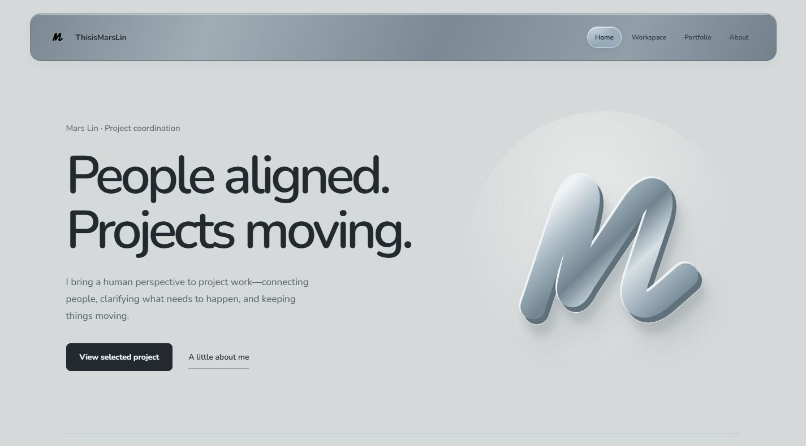

An open workbench.
Screens from my practice. Notes and workstations behind the work.
Workstations

Local prototype capture
Personal website
An actual local capture of the selected homepage prototype. Built with HTML, CSS, and JavaScript.
View repositoryThe making of this site.
Real screenshots from the design process.

The first version
The original silver palette, circular M, and “People first.” introduction.

Finding the material
A darker metal palette and a more compact mark, while retaining the original page structure.

A clearer direction
Project collaboration moves to the foreground, with a more direct route to projects and technical practice.